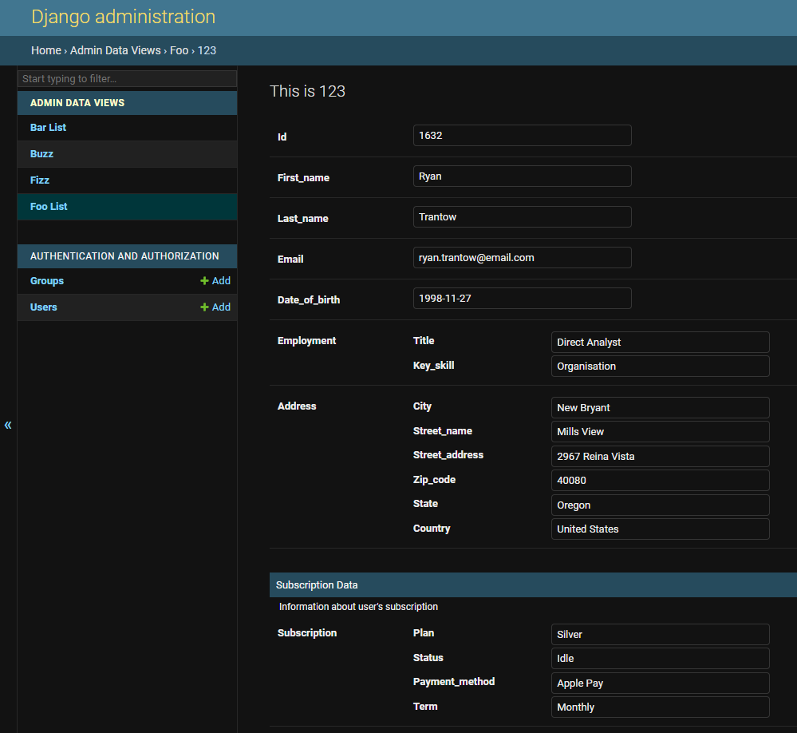

Django Admin Data Views


pip install django-admin-data-views
Documentation: https://mrthearman.github.io/django-admin-data-views/
Source Code: https://github.com/MrThearMan/django-admin-data-views/
Contributing: https://github.com/MrThearMan/django-admin-data-views/blob/main/CONTRIBUTING.md
Django Admin Data Views enables you to easily add non-model data to the django admin panel. Data from an API or file can be shown in similar table and item views than regular models.
